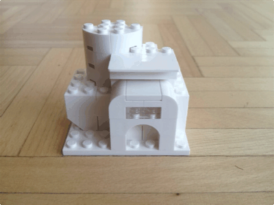

It has been heads down in week 215! We’ve been onsite with a client continuing to wrangle tracking into place. A nebulous deadline was turned into a range then finally nailed down to a specific day. Now things will ship on that day with or without as many features as we want. Luckily we’ve been putting a lot of work in place to make this launch as smooth as possible for us.
We’ve also been hard at work on one of our internal projects. After meeting with some folks in week #214, we’ve been hard at work cleaning-up some prototype code to get ready to present it with real data. We’ll see how well everything performs as expected.
It is also the last week in Q1, which means our newsletter will go out soon. If you haven’t signed-up you should, it is low volume and, we think, pretty interesting.
Week #216 was spent on various other projects. The biggest one will launch in few weeks. It revolves around data for the upcoming UK Election. Our client wants to present themselves to all the 650 MPs and show their impact in each constituency. Once everything has launched we’ll write a longer case-study about what worked, what didn’t and why. In the meantime we’ve been putting together some HTML pages to build-up unique dashboards for each of the 650 constituencies.
We also had some great discussions this week with some of our contacts on the West Coast of the US about some ideas they have regarding dashboards. It has been a dashboard kinda-of-week for sure. Lots of ideas and potential being sketched-up on paper, the back of napkins and index cards as we get the feel for all the limitations and explore the benefits.
Invoices
We currently have two outstanding invoice, one is now 4 months late. That will certainly get some attention after the holiday break. The other was recently sent out two weeks ago. Obviously, we’d like it paid but also recognise that it takes time to process through bigger companies. We’ll certainly be keeping an eye on it.
Bric-à-brac
A while ago we picked-up the LEGO Architecture set, but haven’t had any time to play with it. In April our goal is to create at least one small house for each weeknote. Here is our first go at a lovely, potential museum space.

Through the use of hydrophilic and hydrophobic materials, it is possible to make fluids move, seemingly by their own accord. These examples were pretty amazing. Watching colors “sort” themselves, dance and move all without any additional input.
April fools was in week #216. The day before Amazon announced its new Dash Button. It seems that the silly April fools jokes dust has settled and it is a real thing.
Matt Webb, from BERG wrote his thoughts on the product. He is in a unique position because a full year earlier they were prototyping the same thing built into a washing machine called CloudWash.
Lastly, the folks we share and office space with have been diligently working on their next DVD release. Reykjavik Aurora is a glimpse of what is to come.